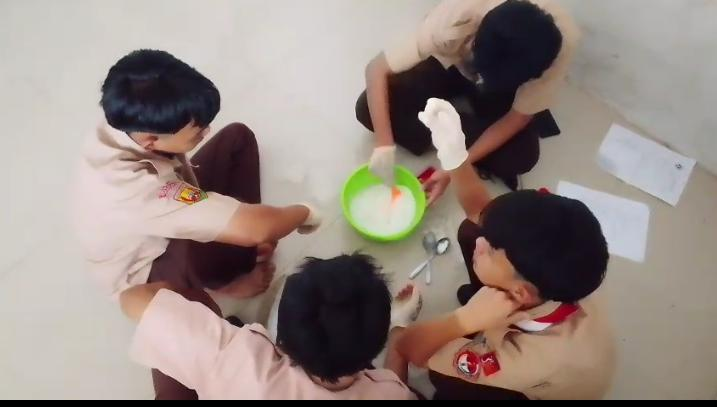
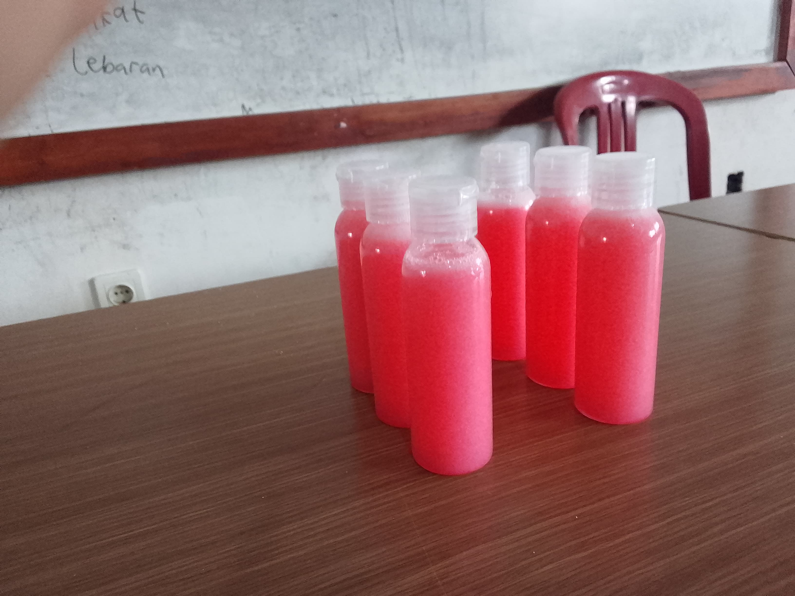

Cara Pembuatan
- Siapkan wadah dan alat pengaduk.
- Campurkan Texapon dengan air sedikit demi sedikit.
- Tambahkan sodium sulfat, aduk hingga merata.
- Masukkan garam untuk mengentalkan sabun.
- Tambahkan pewangi dan pewarna sesuai selera.
- Aduk hingga semua bahan tercampur sempurna.
- Diamkan beberapa saat, lalu sabun siap digunakan.
dokumentasi


© 2026 Praktek Sekolah - Sabun Cair